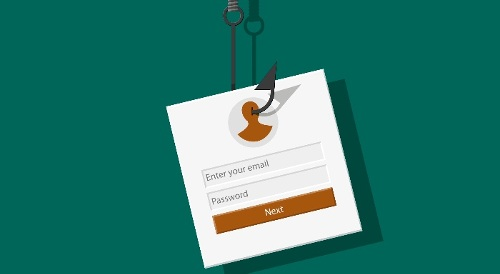
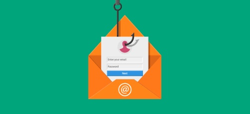

Don't Be The Next Victim Of An Email Phishing Attack!
Protect Yourself With These Simple Tips
Protect Yourself With These Simple Tips
Phishing attacks are on the rise, and they are becoming more sophisticated. These attacks can result in the loss of sensitive data, and they can be very costly to organizations. There are a few best practices that organizations can follow to prevent phishing attacks:
Email phishing is a type of online scam where criminals send fake emails that appear to be from a legitimate organization. These emails typically contain a link that leads to a fake website where the user is asked to enter personal information, such as their login credentials or credit card number. Phishing attacks can be difficult to spot, but there are some things you can look for to protect yourself.
1. Train your employees with a structured program that includes anti-phishing education, awareness campaigns, and engaging tools

The most effective way to decrease phishing attacks is by promoting shared security behaviors across people, processes, and technology. By demonstrating to your workers the undesirable effects of phishing attacks, you'll build security awareness that's as strong a line of defense as even the most robust firewall.
Strong anti-phishing education programs should include compliance with legislation, ongoing education, and awareness promotion. To keep up the momentum, maintain content up to date by including videos, infographics, and other interactive elements.
Workshops are an additional tool in the anti-phishing arsenal, which can be particularly successful with high-risk departments or teams. You can also use a game-show style with a to-the-point or poll-based challenge that you can administer on mobile, perhaps earning points for a prize.
2. 'Test' your people with a mock phishing campaign
Quicker and a growing number of companies are testing their employees with phishing campaigns. For some IT managers, conducting the tests is unpleasant. However, if the tests are executed correctly, tackling an employee's consternation and avoiding a negative perception can prevent you from getting stained!
Make testing a positive and constructive effort by framing it as a winning effort. Explain the purpose behind your tests to motivate your employees and keep them engaged. Allow them to be given awards for discovering a scammer and reinforce positive behavior.
Providing constructive feedback to employees who fail tests is important, too. Review everything that was phish-prone about that email with them and give them remedial training to ensure that the emergency room at a computer attack with adequate security awareness the next time they write an email. Check on testing procedures as often as possible, ideally monthly.
3. Use multifactor authentication and consider emerging passwordless technologies
Up to this point, we have focused our attention on human behavior, but multifactor authentication (MFA) is a minor technical control that may make a huge impact. MFA helps protect information from being hijacked by verifying the user using multiple unique authentications -- a secondary, one-time password sent via text message, a physical token, a biometric identifier -- rather than usernames and passwords alone. Multiple authentications are a means for protecting passwords; they are a gate that keeps malicious parties from accessing a castle.
4. Train your people to trust but verify

Even if multiple permissions are enabled, no two-factor authentication system will be totally effective if individuals bypass controls and cover various channels. It's disarmingly improbable that anyone would provide multiple authentication codes to a phishing trap since their confidence in the legitimacy of the message is absolute.
You should add that part of your phishing training includes training your employees to trust but verify. If existing controls can be put into action through an email request, an employee should run it by whoever is authorized to deviate from safe procedures. That way you can maintain security and ensure that outside messages are always truthful. Remind your personnel to follow your company's policies at all times.
5. Instead of sacrificing usability for security, use technology to improve the user experience in a secure way
IT professionals often deal with trade-offs between maximizing user experience and protecting access to systems and data. But MFA can be combined with other security programs to improve the user experience without compromising security.
From the user's point of view, the same authentication system can be configured to exclude additional authentication for sites with no suspicious devices or locations, making it easier and faster to access systems.
In summary, having employees trained in how to recognize phishing emails is the single most important measure businesses can take to protect themselves from phishing attacks. Educating employees through classroom training, and phishing simulation exercises is important, but also having a culture of open and transparent communication is critical. When it comes to phishing, employees really can be “the first line of defense”.